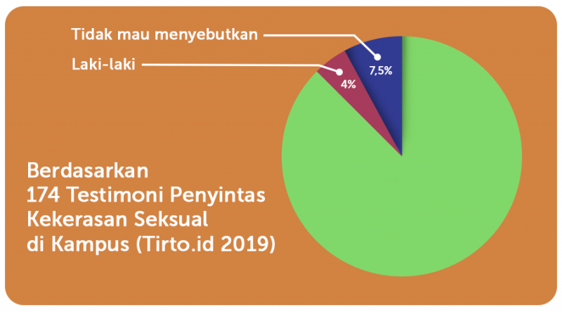
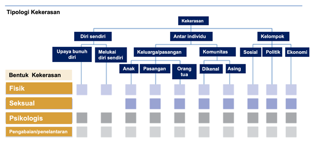

Memahami Kekerasan Di Lingkungan Pendidikan
Tujuan Pembangunan Berkelanjutan, sebagaimana tertuang dalam Lampiran Perpres No.59 tahun 2017, adalah tujuan global yang selaras dengan pembangunan nasional Indonesia. Salah satu upaya untuk mewujudkannya adalah dengan menjamin kualitas pendidikan yang inklusif dan merata serta meningkatkan kesempatan belajar sepanjang hayat untuk seluruh masyarakat Indonesia.
Pendidikan merupakan hak asasi yang berfungsi sebagai bekal bagi generasi penerus untuk memajukan kesejahteraan bangsa. Sayangnya, kita masih dapat menemukanpraktik kekerasan, termasuk kekerasan seksual, yang melibatkan pendidik, tenaga pendidik, dan mahasiswa sebagai korban atau pun pelaku kekerasan seksual. Kekerasan merupakan halangan untuk menciptakan ruang pembelajaran yang inklusif dan merata.
Merujuk dari Catatan Tahunan Komnas Perempuan tahun 2015 sampai 2020, kekerasan berbasis gender terjadi di semua jenjang pendidikan, mulai dari pendidikan usia dini sampai pendidikan tinggi. Dari total kasus yang diadukan, universitas menempati urutan pertama dengan persentase sebesar 27 persen dengan jenis kekerasan yang paling banyak adalah kekerasan seksual.
Data mengenai kekerasan seksual di lingkungan perguruan tinggi juga diperkuat oleh Kolaborasi #NamaBaikKampus yang melibatkan sejumlah media massa nasional pada 2019. Dari 207 testimoni yang masuk, 174 di antaranya merupakan kasus kekerasan seksual yang terjadi di kampus atau dilakukan oleh sivitas akademika dalam kegiatan akademik di luar kampus (Zuhra, 2019). Korban tersebar di 29 kota di Indonesia.
Kekerasan yang terjadi di lingkungan pendidikan dapat memengaruhi proses belajar pelajar atau mahasiswa. Ketika pelajar atau mahasiswa tidak dapat belajar secara optimal dalam lingkungan pendidikan yang aman dan nyaman, mereka kehilangan kesempatan untuk mengembangkan dan mengaktualisasikan potensinya. Sebagai konsekuensinya, visi mewujudkan SDM unggul untuk mendukungpembangunan nasionalsulit atau bahkan tidak akan tercapai. Olehkarena itu, menciptakan dan memastikan lingkungan pendidikan yang inklusif dan bebas kekerasan merupakan tanggung jawab kita bersama.
Untuk memberikan penjelasan lebih lanjut mengenai jenis-jenis kekerasan, gambar di bawah ini menjelaskantipologi kekerasan berdasarkan bentuk yang dapat dilakukan seorang individu terhadap diri sendiri atau kelompok/individu terhadap orang lain dan/atau kelompok tertentu (Krug et al., 2002).
Pembagian tipologi tersebut menunjukkan kekerasan dapat terjadi di semua level, mulai dari individu, antar individu, dan kelompok. Identitas setiap individu berbeda satu dari yang lain, sehingga dampak kekerasan pada setiap individu pun berbeda-beda tergantung pada identitas yang dimilikinya. Ada individu/kelompok yang lebih rentan dibanding yang lain sehingga dapat mengalami dampak kekerasan yang lebih besar.
Setelah mempelajari lapisan identitas yang dimiliki seorang individu, mari kita membahas keadilan dan kesetaraan. Seperti yang telah disampaikan sebelumnya,meski tiap individu punya kerentanan yang berbeda, semua memiliki hak yang sama untuk mengakses hak dasarnya, termasuk pendidikan.
Dengan latar belakang lapisan identitas yang berbeda, bagaimana kita memastikan setiap warga negara bisa mendapatkan haknya atas pendidikan? Mari kita cari tahu lebih lanjut mengenai keadilan dan kesetaraan.
Kesetaraan merupakan kondisi ketika semua orang menerima hak, kesempatan, sumber daya, dan perlindungan yang sama, tanpa perlakuan berbeda berdasarkan identitas yang dimiliki.
Kesetaraan berkeadilan merupakan kondisi saat semua orang mendapatkan kesempatan dan akses sesuai dengan kebutuhannya. Salah satu hal yang perlu dilakukan untuk menciptakan kondisi ini adalah melalui kebijakan afirmatif, yakni dengan memuat standar minimum yang sesuai dengan kebutuhan dan situasi setiap individu.
Perlu diingat bahwa keadilan dan kesetaraan bukan konsep yang saling bersaing. Dalam upaya mewujudkan keadaan di mana setiap orang mendapatkan hak dan akses yang setara, diperlukan pendekatan yang adil.
Prinsip kesetaraan dan keadilan telah menjadi prinsip dasar masyarakat Indonesia dalam bernegara dan bermasyarakat, sebagaimana tertuang dalam sila ke-5 Pancasila yang berbunyi "Keadilan Sosial bagi Seluruh Rakyat Indonesia". Prinsip keadilan merupakan inti dari nilai-nilai ketuhanan dan landasan pokok perikemanusiaan. Sebagai bentuk pengamalan Pancasila, memastikan kesetaraan dan keadilan di lingkungan pendidikan merupakan tugas kita bersama sebagai warga negara Indonesia.
1. Situasi di satuan pendidikan belum aman dari kekerasan
Lingkungan pendidikan kita belum bebas dari kekerasan. Hal ini dapat menghambat proses belajar para pelajar dan mahasiswa. Membangun lingkungan pendidikan yang aman merupakan upaya mewujudkan SDM unggul yang akan berkontribusi pada pembangunan nasional. Mengenal jenis-jenis kekerasan di lingkungan pendidikan dan identitas kerentanan merupakan hal yang penting untuk membangun empati dan lebih memahami kekerasan yang terjadi di sekitar kita.
2. Pahami nilai yang kita miliki
Nilai adalah keyakinan, prinsip, dan gagasan yang dianggap penting oleh seorang individu. Nilai dapat dipelajari dan terus diperbarui sepanjang hidup kita. Jika nilai yang kita percaya dapat merugikan dan merampas hak orang lain, kita perlu berefleksi apakah nilai tersebut perlu untuk ditinggalkan dan mempelajari nilai lain yang lebih humanis. Berdasarkan profil pelajar Pancasila, ada enam nilai yang dapat mendorong terwujudnya lingkungan pendidikan yang bebas dari kekerasan, antara lain beriman dan bertakwa kepada Tuhan YME dan berakhlak mulia, berkebinekaan global, mandiri, bernalar kritis, bergotong royong, dan kreatif.
3. Dukunglah orang lain dengan empati
Jika teman kita mengungkapkan bahwa mereka mengalami kekerasan, cara terbaik untuk menunjukkan bahwa kita peduli adalah dengan mengungkapkan kekhawatiran kita, mendengarkan, tidak menghakimi, dan mendorong mereka untuk mencari dukungan dan sumber bantuan lain.